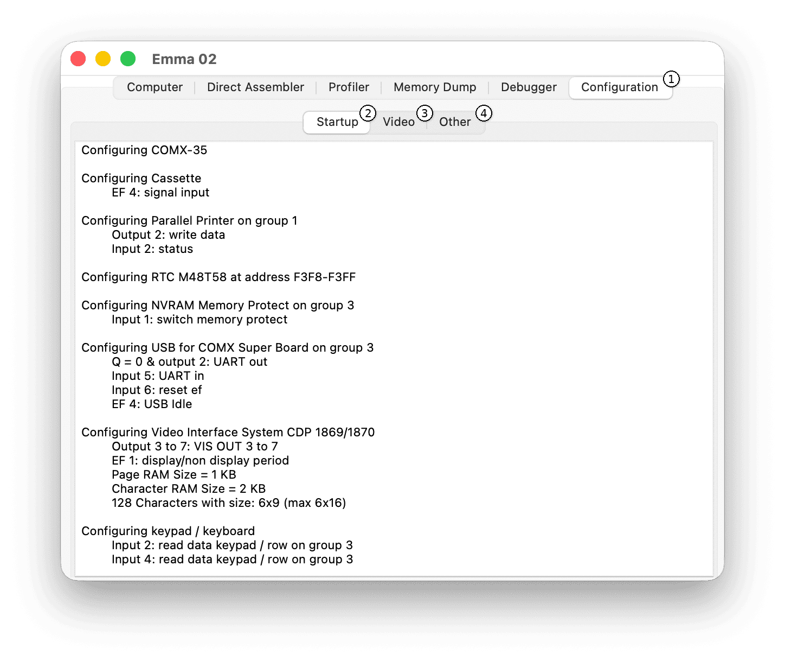

Configuration
The Configuration tab shows the I/O configuration summary for the emulated computer. The Configuration tab interface is shown below:

To open this tab, select the Configuration tab (1).
The Configuration tab contains three sub-tabs:
- (2) Startup sub-tab - startup configuration summary.
- (3) Video sub-tab - debugging of video configurations. See the Video Configurations section.
- (4) Other sub-tab - debugging of other configurations. See the Other Configurations section.
Important Notes
- Settings in the Video and Other tabs are not saved in the Emma 02 configuration file. Each time Emma 02 starts, configuration settings return to their default values.
When to Use the Configuration tab
Use the Configuration tab when:
- You want to understand how configured I/O is defined.
- You need to check Video and Other I/O register values.